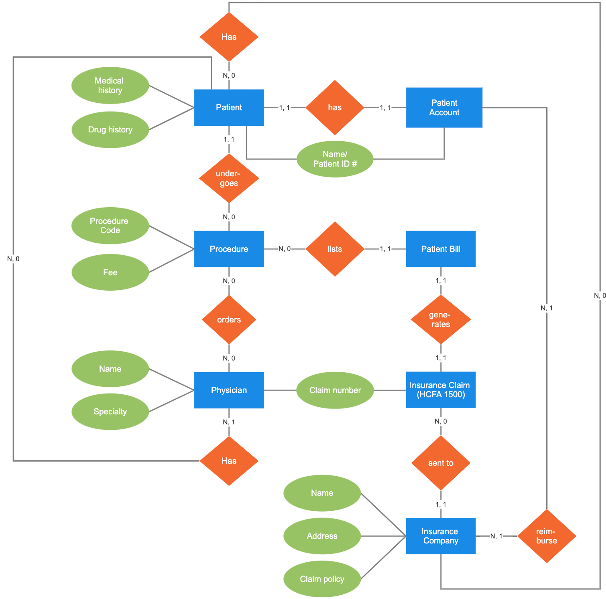

ERD
ERD sümbolid

ERD komponendid ja funktsioonid
Olemused (Entities):
- Olemused on reaalsed või kujuteldavad objektid, mida soovite andmebaasis jälgida.
- Iga olemus esindab konkreetset andmekogumit, millel on omadused või atribuudid.
- Näiteks võib klient olla üks olemus ja tal võivad olla atribuudid nagu nimi, aadress ja telefoninumber.
Atribuudid (Attributes):
- Atribuudid on omadused, mis kirjeldavad olemusi.
- Need on andmed, mida soovite iga olemuse kohta salvestada.
- Iga atribuudi jaoks on määratud andmetüüp (nt tekst, number, kuupäev jne).
- Näiteks klienti kirjeldavate atribuutide hulka võivad kuuluda eesnimi, perekonnanimi, telefoninumber jne.
Suhted (Relationships):
- Suhted kirjeldavad seoseid erinevate olemuste vahel.
- Need näitavad, kuidas üks olemus on seotud teisega.
- Suhted võivad olla üks-ühele, üks-palju või palju-palju.
- Näiteks võib klient olla seotud tellimusega, kus üks klient võib omada mitmeid tellimusi, moodustades seega üks-palju suhte.
Võtmed (Keys):
- Võtmed on atribuudid või atribuutide kombinatsioonid, mille abil saab üheselt tuvastada iga olemuse eksemplari.
- Primaarvõti (Primary Key) on ainulaadne võti, mida kasutatakse konkreetse olemuse eksemplari identifitseerimiseks.
- Võõrvõti (Foreign Key) on võti, mis loob seose kahe erineva olemuse vahel, määratledes suhte.
- Näiteks klientide tabelis võib kasutada klientide ID-d kui primaarvõtit ja tellimuste tabelis klientide ID-d kui võõrvõtit, et seostada iga tellimus konkreetse kliendiga.
Mudelid (Models):
- Mudelid on ERD-skeemid, mis näitavad olemuste, nende atribuutide ja suhete vahelisi seoseid.
- Need annavad ülevaate andmebaasi struktuurist ja aitavad arendajatel mõista, kuidas erinevad andmekogumid omavahel seotud on.
- Mudelid võivad olla kõrgtasemelised (nt kontseptuaalsed mudelid) või detailsemad (nt füüsilised mudelid, mis kirjeldavad konkreetse andmebaasi struktuuri).
Jira
- Jira on ülesannete haldamise ja projektijuhtimise tarkvara, mis on laialt kasutusel tarkvaraarendusmeeskondades. See võimaldab meeskonnal jälgida ülesandeid, hallata projekte, koordineerida töövooge ja suhelda tõhusalt meeskonnaliikmete vahel. Jira pakub mitmeid funktsioone, sealhulgas ülesannete jälgimine, ajakava koostamine, ülesannete prioriteedi seadmine, teavitused ja aruandlus. Tänu sellele saavad arendusmeeskonnad paremini korraldada oma tööd, jälgida projekti edenemist ja tuvastada võimalikke takistusi varakult. Lisaks võimaldab Jira integreerida teiste populaarsete tööriistadega, nagu GitHub, Bitbucket ja Confluence, mis parandab meeskonna koostööd ja tõhusust.